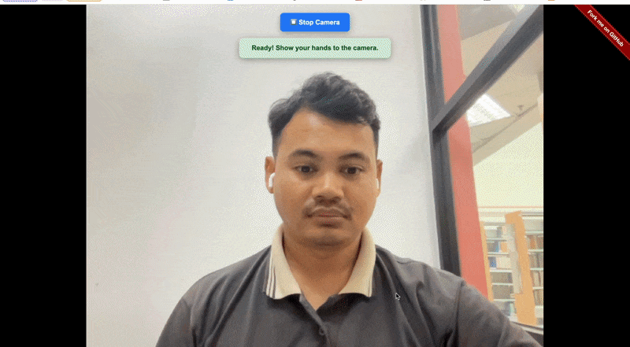

Fork me on GitHub
Instructions

{{ loading ? 'Starting...' : '🎥 Start Camera' }}
⏹️ Stop Camera
{{ statusMessage }}
{{ gestureResults.left }}
{{ gestureResults.right }}
🎙️
{{ transcriptionText || 'Listening...' }}